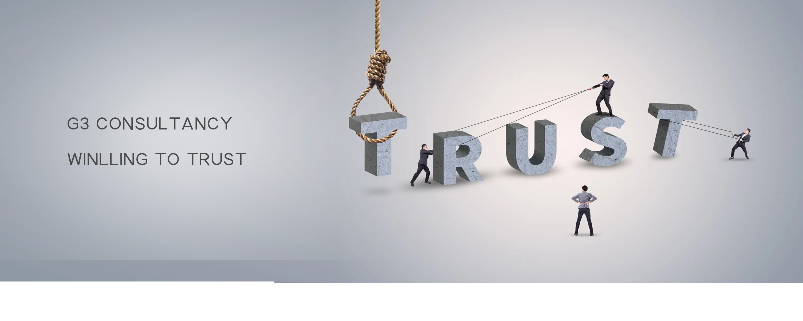

Welcome to the Service Page

Let us start!
Common Problems
- When the external environment, enterprise scale and strategic development direction change, but the organizational structure is not timely adjusted, resulting in organizational rigidity or functional weakness, which cannot adapt to the needs of enterprise development;
- The authority and responsibility between departments and positions are not clearly defined, and the organization and management are confused, resulting in mutual confusion and shifting responsibilities;
- Organizational structure designed with too much management range or too many management levels;
- The relationship between centralization and decentralization is not handled well between the company and each business unit, which shackles business development or causes business to get out of control;
Implementation Steps |
Job Description |
Diagnosis of the current state of organizational management research |
Industry research: analysis of the current state of the industry, benchmarking analysis |
Internal research: strategic development direction, business value chain analysis, questionnaires, interviews, etc |
|
Organizational management program design |
|
Design of organizational control model |
|
Drawing organizational charts |
|
Development of departmental function descriptions |
|
Preparation of job descriptions |
|
Division of key responsibilities and powers (personnel rights, financial rights, business rights, asset rights) |
|
Organizational management program implementation |
Expected results
- Qualitative effects: visualization of production site management, establishment of lean team management model, standardization of production operations, improvement of staff motivation, development of enterprise visualization management standards.
- Quantitative effects: lower inventory, higher productivity, higher production line availability, and shorter manufacturing cycle time.
Steps |
Description |
Results |
manufacturing research and analysis |
Site observation:Make a site observation form and draw up a site observation plan |
Manufacturing Research and Diagnosis Report |
Interviews, talks |
||
Research and production related materials |
General Management Course
- Be able to constantly adapt to the challenges of rapid change and unpredictability, how to improve the quality of corporate employees through training to achieve the desired results, it is necessary to study its impact on corporate impact to understand the misconceptions of modern corporate training management, targeted work to make training effective and satisfactory to all parties.
Steps |
Description |
Results |
Leadership Training and the Art of Delegation |
Leadership Responsibility and Discipline |
Improvement of leaders' thinking methods, business management, crisis management, team management to help further strengthen the control of the company's overall situation |
Traits of a Leader |
||
Leadership Enhancement for Leaders |